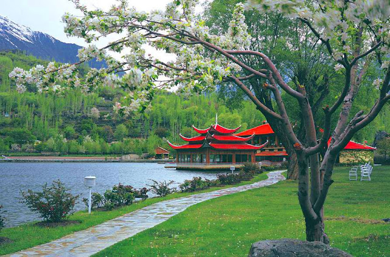
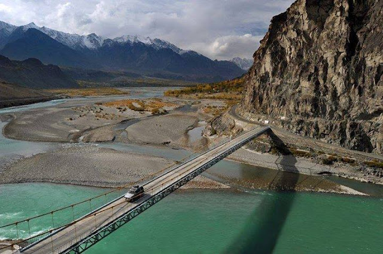

The city of Pakistan :
Gilgit is the capital city of Gilgit–Baltistan, Pakistan. The city is located in a broad valley near the confluence of the Gilgit River and Hunza River, and is a major tourist destination in Pakistan, serving as a hub for trekking and mountaineering expeditions in the Karakoram mountain range. Gilgit was once a major centre for Buddhism; it was an important stop on the ancient Silk Road, and today serves as a major junction along the Karakoram Highway with road connections to China as well as the Pakistani cities of Skardu, Chitral, Peshawar, and Islamabad. Currently, it serves as a frontier station for the local tribal areas. The city's economic activity is mainly focused on agriculture, with wheat, maize, and barley as the mainly-produced crops.

The urban area is divided into eight zones: administrative, diplomatic, residential, institutional, industrial, and commercial areas, a greenbelt, and a national park. It includes an Olympic village and gardens and dairy, poultry, and vegetable farms, as well as such institutions as the Atomic Research Institute and the National Health Centre. The name Islamabad (“City of Islam,” or “City of Peace”) was chosen to reflect the country’s ideology.
The planned capital area of 350 square miles (906 square km) is an expanse of natural terraces and meadows surrounding the city. A further 1,400 square miles (3,626 square km) of hinterland, known as the Specified Areas, is subject to planning control, with the Margala Hills, 3,000 to 5,000 feet (900 to 1,500 metres) high, in the north and northeast. The southern portion is an undulating plain. It is drained by the Kurang River, on which the Rawal Dam forms a lake holding about 50,000 acre-feet (61,650,000 cubic metres) of water. Pop. (2017) city, 1,009,832; capital area, 2,001,579.

Brogpas trace their settlement from Gilgit into the fertile villages of Ladakh through a rich corpus of hymns, songs, and folklore that have been passed down through generations.[5] The Dards and Shinas appear in many of the old Pauranic lists of people who lived in the region, with the former also mentioned in Ptolemy's accounts[6] of the region.
Gilgit was an important city on the Silk Road, along which Buddhism was spread from South Asia to the rest of Asia. It is considered as a Buddhism corridor from which many Chinese monks came to Kashmir to learn and preach Buddhism.[7] Two famous Chinese Buddhist pilgrims, Faxian and Xuanzang, traversed Gilgit according to their accounts.
Made with By Mr.Haris
Leave a Comment